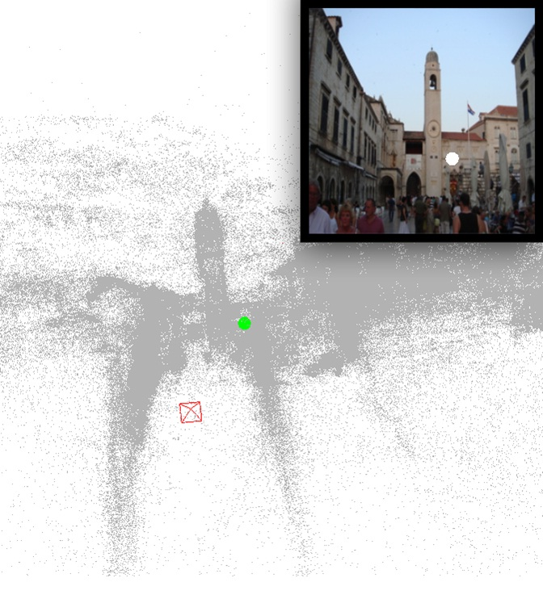
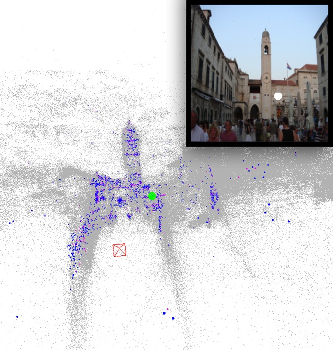
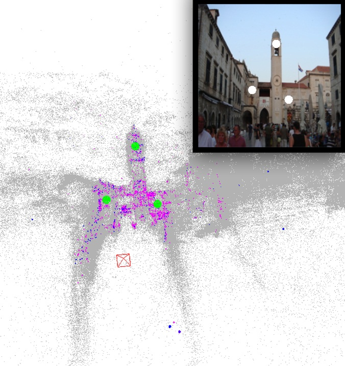
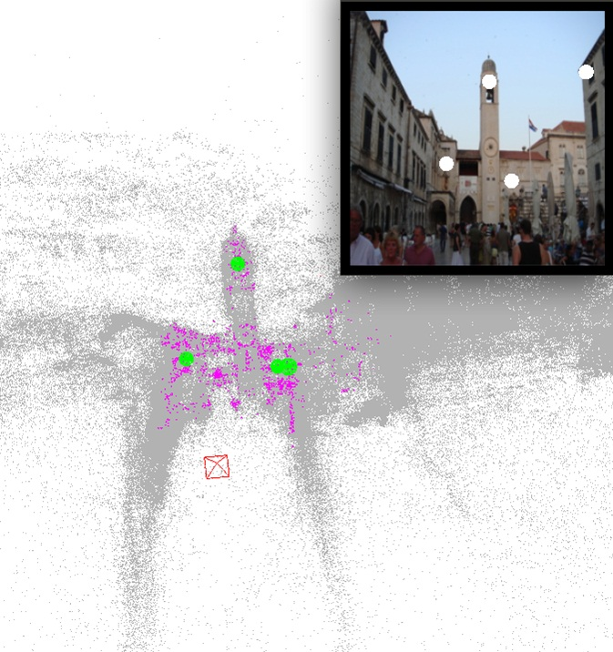

Seed Point |

First Match |
Second Match |

Third Match |

Fourth Match |
Abstract
Large scale reconstructions of camera matrices and point clouds have
been created using structure from motion from community photo
collections. Such a dataset is rich in information; it represents a
sampling of the geometry and appearance of the underlying space. In
this paper, we encode the visibility information between and among
points and cameras as visibility probabilities. The conditional
visibility probability of a set of points on a point (or a set of
cameras on a camera) can rank points (or cameras) based on their mutual
dependence. We combine the conditional probability with a distance
measure to prioritize points for fast guided search for the image
localization problem. We define dual problem of feature triangulation as
finding the 3D coordinates of a given image feature point. We use
conditional visibility probability to quickly identify a subset of
cameras in which a feature is visible.
Citation
- Choudhary S., Narayanan P. J. Visibility Probability Structure from SfM Datasets and Applications. In
Proceedings of European Conference on Computer Vision (ECCV) 2012.
- Bibtex
Downloads
- ECCV'12 Paper [pdf]
- Video [wmv]